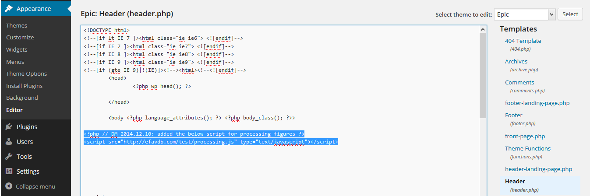

We recently developed our NBA dashboard in the programming language Processing. In addition, we have Processing apps in our post on classification without negative examples as well as our weekly NBA predictions. Here, we will briefly describe (and recommend) Processing and discuss some tips and tricks we have discovered in developing and deploying our above-mentioned apps to our WordPress blog.
Follow us on twitter for new submission alerts!
Processing Intro
Your browser does not support the canvas tag.
JavaScript is required to view the contents of this page.
Processing is a high-level language built on top of java designed for producing neat interactive visualizations of ideas, data, and art. A major benefit of Processing is that it is extremely accessible (see for example, this ebook by Reasand Fry): while it can now be used to produce considerably sophisticated visualizations, it was originally developed as a tool for teaching programming to people with little to no experience with computers (e.g., visual arts students). The little guy above is an example of a processing app. You can find the (remarkably simple) code for it here (we found this example in this tutorial).
For people with technical backgrounds, you can be up and developing basic programs in a matter of hours (or perhaps even minutes). Here, our programming language of choice is typically Python and, fortunately, the people at Processing recently implemented Python-mode which made our transition all the more smooth (see Quirks below before you get too excited about this, however). In just a couple of days we were able to build a quick prototype of our tool. Porting it to the web, however, we found to be a bit more difficult.
Processing in WordPress Tutorial
We spent some time trying to figure out how to get everything working in WordPress. We thought it would be useful to outline the steps below for others interested in getting some Processing-based dynamic content on their own blog. In the end it is very straight forward, but getting some more advanced features of Processing (e.g., importing external images or data files) to work on the web requires some tricks which we will tackle in the next section.
1. Download the processing.js script and put it on your server. This script defines a “canvas” element where your Processing code is executed on your webpage.
2. In your theme’s header file (header.php), add the following line of code to the body of the file (after
and before ), changing the url to point to the script from step 1:<script src="url_to_processing.js" type="text/javascript"></script>
You can change this file using your dashboard in the Appearance - Editor menu, selecting “Header (header.php)” for the Template (see this screenshot - the first line is a comment). 
{kind=link}
3. Upload your pde script(s) to your server and they can be referenced using code like the following (replace the urls to point to your pde scripts):
<canvas id="testsketch" class="alignright" data-processing-sources=
"{static}/wp-content/uploads/sketches/testSketch2/testSketch2.pde
additional_url.pde yet_another_url.pde">
Your browser does not support the canvas tag.</canvas>
<noscript>JavaScript is required to view the contents of this page.
</noscript>
You simply place this code in the “text” view of any post or page in WordPress. Note that you don’t need to have multiple pde scripts, in most simple cases you will only have one. However, sometimes it is useful to call on multiple (see below quirk #3). To include multiple, simply place multiple urls (separated by spaces) between the quotes in the canvas tag.
4. Enjoy! Wasn’t that simple? Now you can mess around and create all sorts of cool, dynamic apps for your blog.
Running list of processing quirks and tips
1) It took us a while to come to the conclusion that there is, currently, no easy way to get Python-mode Processing code on the web (please let us know if we are wrong about that…). We ended up translating our Processing code from Python syntax to Javascript syntax and using processing.js (as implied in our tutorial above).
2) In order to load images for display in your app (if applicable), you will have to use the preload directive in your pde script. This comes in the form a of a comment at the top of the script: / @pjs preload=”url_to_myimage.jpg”; /. The “@pjs” tags this comment for processing.js to read and execute before the rest of the script runs. It forces the browser to complete downloading and caching of the image before attempting to use it.
3) We could not figure out a clean way of importing data from an external file (e.g., in csv or txt format). Instead, we found that saving the external data in Javascript format in a separate pde file and running that file in addition to your main script (see step 3 from the tutorial above) worked well. As an example, here is a pde file that we use to feed in the results of NBA games that have already been played this season into our NBA dashboard. We scrape this data off the web and run a preprocessing python script to get the data in this format and save the completed.pde file.
4) As a security precaution, many browsers (e.g., Chrome) won’t run a sketch that links to images or data stored on a separate server. As a consequence, when developing a sketch on your computer that links to data on your server, it may appear to not be working, even if coded properly. It’s easy to misinterpret this issue as a bug, so keep it in mind. One way to avoid this is to try running your sketch in other browsers. Regardless, once a sketch is uploaded to your server, the sketch should work fine on any browser.
5) Interestingly, when logged in to WordPress, we have found that the Processing apps work, but function as if the mouse were several pixels lower than it actually is. This symptom is only apparent when logged in to WordPress and viewing the page (see example screenshot at right).
{kind=link}
6) Processing has two rendering modes, smooth and not smooth. I believe the latter requires less memory to implement, and that this is why it exists. We prefer smooth drawing, and tried to implement this from the start. However, we recently discovered that if you apply coordinate transformations in your processing sketch (translations or rotations), the program forces back to the not smooth mode. This came as a surprise to us, since it’s not mentioned in any of the basic documentation. Our original NBA wheel sketch made use of a translation; we’ve reimplemented that without it, and see a marked aesthetic improvement.
7) We noticed that running our first NBA wheel sketch would often cause a laptop to quickly heat up. This was due to the fact that we were having the sketch refresh with a frame rate of about 30 hz, which is totally unnecessary for this particular application. Changing the draw program so that the image refreshes only when some new information is requested totally fixed our heating issues.
 Dustin got a B.S in Engineering Physics from the Colorado School of Mines (Golden, CO) before moving to UC Santa Barbara for graduate school. There he became interested in Soft Condensed Matter Physics and Polymer Physics, studying the interaction between single DNA molecules and salt ions. After a brief postdoc at UC San Diego studying the physics of bacterial growth, Dustin decided to move into the data science business for good - he is now a Quantitative Analyst at Google in Mountain View.
Dustin got a B.S in Engineering Physics from the Colorado School of Mines (Golden, CO) before moving to UC Santa Barbara for graduate school. There he became interested in Soft Condensed Matter Physics and Polymer Physics, studying the interaction between single DNA molecules and salt ions. After a brief postdoc at UC San Diego studying the physics of bacterial growth, Dustin decided to move into the data science business for good - he is now a Quantitative Analyst at Google in Mountain View.